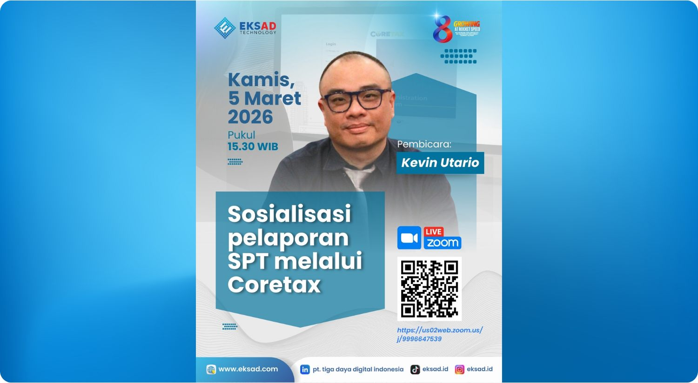
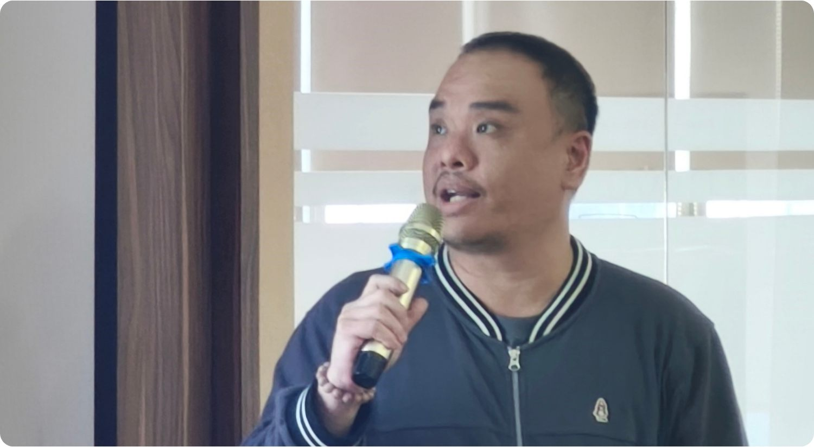
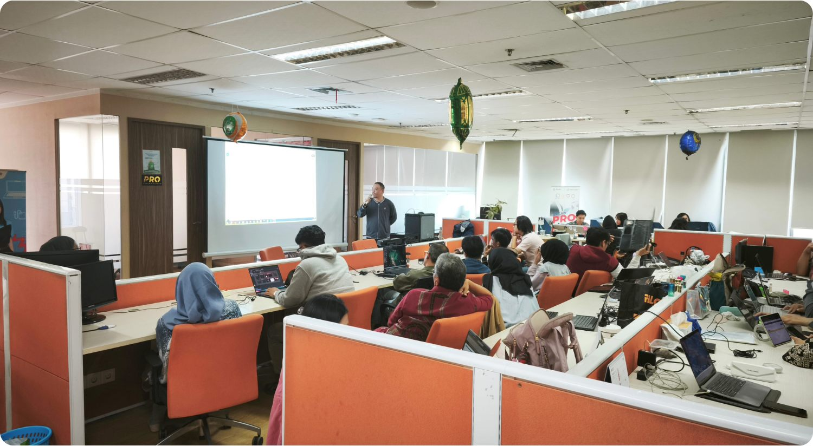
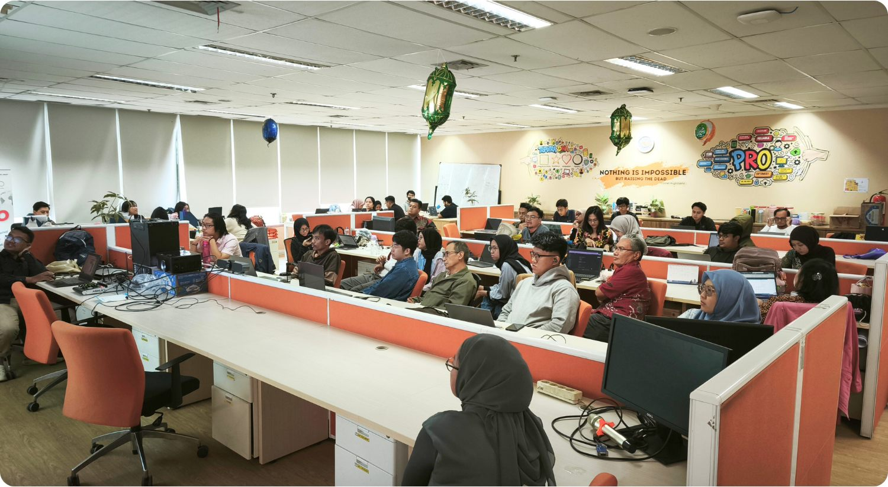

Sharing Session: Introduction to SPT Reporting through Coretax

On March 5, 2026, EKSAD Technology held a sharing session titled “Introduction to SPT Reporting through Coretax” at the EKSAD office. The purpose of this session was to provide EKSADians with a better understanding of the latest tax reporting system through the Coretax platform.
In this session, Kevin Utario, an EKSADian, shared insights about the latest tax reporting process as well as important aspects that need to be considered when using the Coretax system. The sharing session lasted for approximately one and a half hours and was attended enthusiastically by the EKSADians.


In addition to the presentation, the event became even more engaging through an active and interactive Q&A session. Participants enthusiastically raised various questions regarding SPT reporting through Coretax, creating a lively discussion filled with valuable insights. This interaction provided an opportunity for EKSADians to deepen their understanding while also sharing experiences related to the current tax reporting process.
Through this activity, it is hoped that all EKSADians will gain a better understanding of the tax reporting process through Coretax, enabling them to submit their SPT reports more easily, accurately, and in accordance with the applicable regulations.
